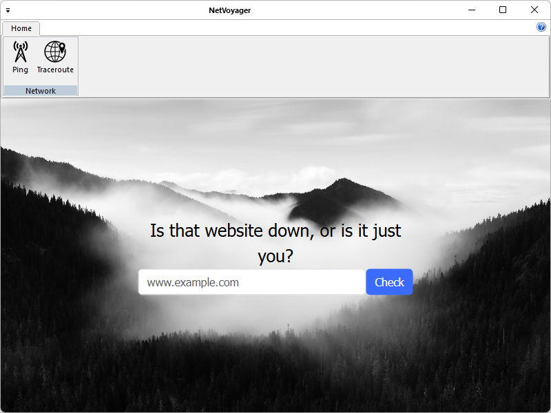
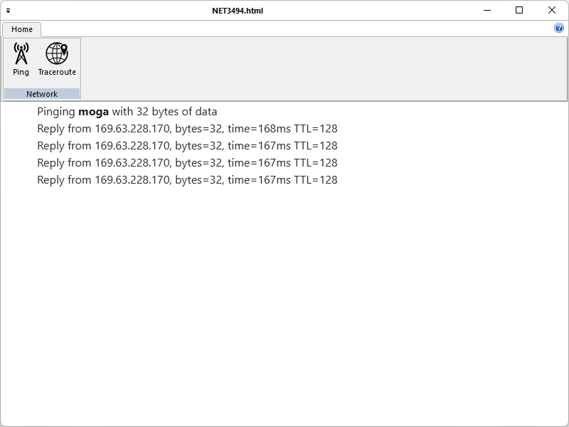
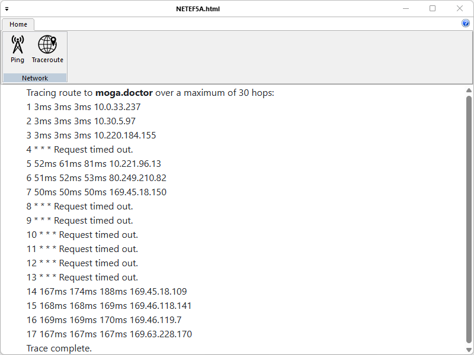

NetVoyager is a lightweight network diagnostics app that lets users quickly assess connectivity and trace routes. With built-in ping and traceroute tools, it helps identify latency issues, unreachable hosts, and visualize packet paths. Ideal for IT pros, engineers, and curious users, with a clean UI and real-time results. NetVoyager is written in C++ and uses pure Win32 API and STL which ensures a higher execution speed and smaller program size. By optimizing as many routines as possible without losing user friendliness, NetVoyager is trying to reduce the world carbon dioxide emissions. When using less CPU power, the PC can throttle down and reduce power consumption, resulting in a greener environment. I hope you enjoy NetVoyager as much as I enjoy coding it!
The installer will likely require Administrative privileges in order to install NetVoyager (and later, to update NetVoyager or install or update plugins, or anything else that requires writing to the installation directory). If you do not have Administrative privileges, you either need to tell the installer to use a location where you do have write permission (though that may still ask for Administrator privileges), or you may choose not use the installer and instead run a portable edition from a directory where you have write permission.
These instructions will allow you to run a portable or mini-portable (also called “minimalist”), without requiring administrative privileges.
The portable zip edition of NetVoyager can be removed by deleting the directory they came in. If you manually set up file associations or context-menu entries in the OS, it is your responsibility to remove them yourself.
The NetVoyager menu features the application's most important functions:


As noted in the Contributing Rules for NetVoyager, all Pull Requests need to be attached to a issue on GitHub. So the first step is to create an issue which requests that the functionality be improved (if it was already there) or added (if it was not yet there); in your issue, be sure to explain that you have the functionality definition ready, and will be submitting a Pull Request. The second step is to use the GitHub interface to create the Pull Request from your fork into the main repository. The final step is to wait for and respond to feedback from the developers as needed, until such time as your PR is accepted or rejected.